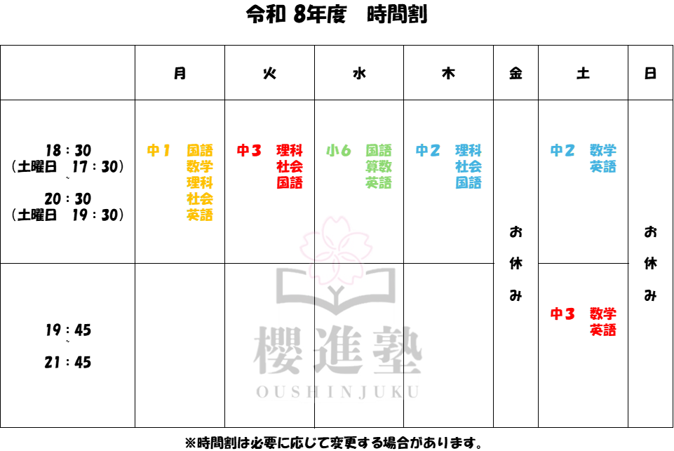

01
先手を行く授業形式
先手だから復習の機会が増える
ただ問題を解くだけではなく、 先に学んでおくことで学校授業の理解が深まり、 定期テスト前にはしっかり復習に時間を使えます。
新入塾生募集
「わからない」を
そのままにしない
櫻進塾は、先手を行く授業形式と一人ひとりに合わせた指導で、 「わかる」「できる」を積み重ね、自信につながる学びを支えます。
わかる喜びが花開く場所
平日 18:30〜20:30 / 土曜あり
About
決断が遅れるほど選択肢は減っていきます。 櫻進塾では、早めの準備と日々の積み重ねを大切にしながら、 入試や定期テストへ向けて力を育てていきます。
「わからない」と言えることを大切にしています。 その場でつまずきを見つけ、一つずつ解消していける環境を整えています。
学年や得意・苦手に合わせて、 先取り・復習・受験対策まで柔軟に対応。 生徒ごとのペースに寄り添って進めます。
Features
先手だから復習の機会が増える
ただ問題を解くだけではなく、 先に学んでおくことで学校授業の理解が深まり、 定期テスト前にはしっかり復習に時間を使えます。
「わからなくなる」前に対応する
わからないまま進んでしまう前に、 気軽に質問できる雰囲気を大切にしています。 不安を小さなうちに解消していきます。
一人ひとりの性格や理解度に合わせる
学習状況や性格に合わせて声かけや進め方を調整し、 「できる」を少しずつ増やしていく指導を行います。
Courses
学習習慣を身につけながら、 国語・算数を中心に基礎学力を育てます。 「わかる」楽しさを感じられる土台づくりを行います。
先取り授業で学校内容を理解しやすくし、 定期テスト対策につなげます。 内申や基礎力アップも重視します。
中学内容の総復習と志望校対策を行い、 入試本番で力を発揮できるように演習量と理解を積み上げます。
Schedule
現在の時間割を掲載しています。必要に応じて変更となる場合があります。
